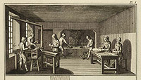

18th & 19th Century Occupations for Women in the Bookmaking
Industry
Of the forty-three occupations for women included in the 1851 publication,
Life in New York, six were related to the bookmaking industry:
"The Book Folder," "The Book Sewer," "The
Gold Leaf Packer," "The Press Feeder," "The
Print Colorer," and "The Type Rubber." If the
descriptions of these activities made them sound almost unimaginably
tedious, they nevertheless represented an improved situation for
many women who toiled in other tasks featured in the book, such
as "The Wool Picker" or "The Chambermaid."
These particular aspects of bookmaking -- folding, sewing, applying
gold leaf, cleaning type -- and their obvious relation to traditional
female activities -- had long been the province of women. The
illustration from Diderot’s Encylopédie, Plate
I, "Fonderie
en Caractères" shows women "dressing type," that
is removing superfluous metal from the cast letters, as early as
the eighteenth century. "The Type Founder," from The
Panorama of Professions and Trades, published in 1836, shows
women in the back room, their bonnets on the wall, engaged in this
same
activity, as does "The Type Rubber" in the 1851 publication, Life
in New York.
In the vignettes of a typical American printing establishment portrayed
on the cover of Scientific American for October 2, 1880, women workers
are included, but again they are shown engaged in tasks conventionally
associated with female labor: folding, gathering, embossing, and
sewing books in a binding frame.

Encyclopédie, ou Dictionnaire Raisonné des Sciences,
des Arts et des Métiers , 3d ed., Genève:
J. L. Pellet, 1778-1779.
Graphic Arts Division

The Panorama of Professions and Trades; or, Every Man's
Book,
by Edward Hazen.
Philadelphia: Uriah Hunt, 1836.
Graphic Arts Division. Gift of Sinclair Hamilton, Class of 1906

Life in New York, In Doors and Out of Doors, by William
Burns. New York: Bunce & Brother, 1851.
Graphic Arts Division

"Book-Making -- The American Book Exchange" Cover
illustration for Scientific American 43, no. 14, n.s. (October
2, 1880).
Graphic Arts Division